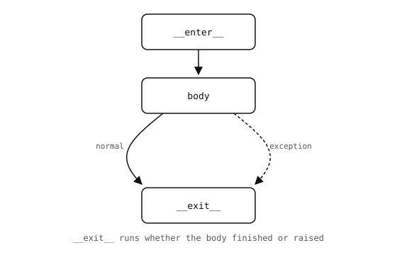

4.24. Context managers¶
The with statement runs setup code, then a body, then
teardown code – with a guarantee that the teardown runs even
when the body fails partway through. The pair of methods that
supplies the setup and teardown is called a context manager.
The shape is:
with <expression> as <name>:
<body>
The expression returns a context manager. Python calls its
__enter__ method, optionally binds the result to <name>,
runs the body, and then calls __exit__ – whether the body
completed normally or raised an exception.

__exit__ runs at the end of the block whatever happens
inside it.¶
4.24.1. Using a context manager¶
The canonical example is opening a file:
with open("data.txt") as f:
text = f.read()
# f is now closed, even if read() failed
open() returns a file object that is itself a context
manager; __enter__ returns the file, and __exit__ closes
it. The with block makes “always close the file when done”
the default rather than something the caller has to remember.
4.24.1.1. Multiple context managers¶
A single with statement can enter several context managers
at once, separated by commas:
with open("input.txt") as src, open("output.txt", "w") as dst:
dst.write(src.read())
Equivalent to two nested with blocks, but flatter. The
managers are entered left to right and exited in reverse order;
if __enter__ on the right-hand manager raises, the left-hand
manager’s __exit__ still runs.
4.24.2. Writing a context manager¶
Any class with __enter__ and __exit__ methods works as a
context manager:
class Section:
def __init__(self, label):
self.label = label
def __enter__(self):
print("---", self.label, "---")
return self
def __exit__(self, exc_type, exc_value, traceback):
print("--- end", self.label, "---")
return False
with Section("setup"):
print("doing the work")
Output:
--- setup ---
doing the work
--- end setup ---
__exit__ receives three arguments describing the exception
that ended the block, or three None values if the block
completed normally. Returning False (or None)
lets any exception propagate after teardown; returning
True would swallow it.
Use context managers for any resource that has an “open / close” or “acquire / release” lifecycle – not just files. The pattern keeps cleanup paired with setup at the point where both are introduced, so a forgotten close in the middle of a long function cannot leak the resource.